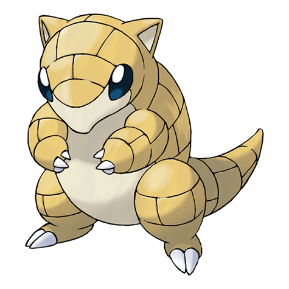
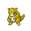

Назад
Сэндшрю

Сэндшрю — Покемон 1 поколения под номером 27 в Покедекс. Обитает он в регионе Канто и относится к Земляному типу. Тело Сэндшрю способно впитывать воду, что позволяет ему выжить в засушливой пустыне. Этот Покемон сворачивается клубочком, чтобы защитить себя от врагов.
Тип:
Земляной
Эволюция

# 027 Сэндшрю
=>
# 028 Сэндслэш